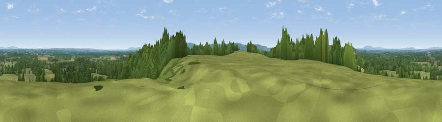

Viewpoint near West Chiltington
#29831 in England · top 47% of its area beats it · near West ChiltingtonWhere it is
The exact computed spot (TQ 09625 19775). Click the marker for map links.
The view, rendered

A 360° render of this exact spot computed from the terrain model, tree cover and land cover — summer colours, afternoon light, calibrated against photographs of famous viewpoints. Real trees, hedges and buildings will differ in detail.
The panorama
Grey silhouette: terrain skyline in each direction (720 bearings, Earth curvature and refraction included). Dashed green: skyline with trees (+15 m) and buildings (+8 m) as obstacles. Blue strip: how far the ground is visible on each bearing.
Where the view opens
Wedge length = distance to the farthest visible ground on that bearing (vegetation-aware). Rings at 10, 25 and 50 km.
What fills the view
56% grassland · 38% woodland · 4% cropland · 2% built-up
Angular shares of the visible panorama (visual magnitude), not map area. Landscape diversity 0.39 (0–1 Shannon).
Key numbers
More beautiful places nearby
The staircase of upgrades: each row has a higher view potential than everything closer. Driving times are estimates from straight-line distance, calibrated against real road routing — check an actual route before setting out.
| Place | Direction | Drive | Score |
|---|---|---|---|
| Viewpoint near Nutbourne | WNW · 2 km | ~6 min | 43.1 |
| Viewpoint near Nutbourne | W · 3 km | ~6 min | 43.7 |
| Toat Hill | WNW · 5 km | ~11 min | 50.1 |
| Viewpoint near Storrington | SSW · 7 km | ~15 min | 83.9 |
| Viewpoint near Washington | SSE · 9 km | ~17 min | 85.0 |
| Chanctonbury Ring | SSE · 9 km | ~17 min | 87.0 |
| Firle Beacon | ESE · 41 km | ~61 min | 88.9 |
| Viewpoint near Niton | SW · 74 km | ~98 min | 89.2 |
50.96697, -0.44020 · source: screening · position refined by local search. Computed location — check access rights before visiting.